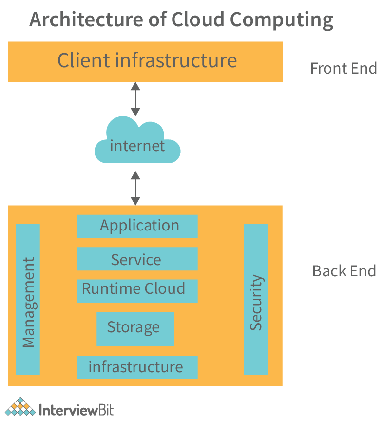

Cloud architecture is the foundational framework that underpins the operation and delivery of cloud computing services. It represents the design principles, components, and structure of a cloud computing environment. At its core, cloud architecture is about optimizing scalability, reliability, performance, and security in a cost-effective manner. One of the fundamental characteristics of cloud architecture is the abstraction of underlying infrastructure, which allows users to access and manage computing resources, such as servers, storage, and networking, without needing to worry about the physical hardware.
Cloud architecture has evolved significantly over the years, driven by technological advancements and the changing needs of businesses. Modern cloud architectures are designed to address complex challenges, such as handling massive amounts of data, ensuring high availability, and supporting microservices-based applications. One notable development is the adoption of multi-cloud and hybrid cloud architectures. These approaches involve using multiple cloud providers or combining on-premises infrastructure with cloud resources to achieve flexibility, redundancy, and compliance with specific regulatory requirements.
Go to Level 2